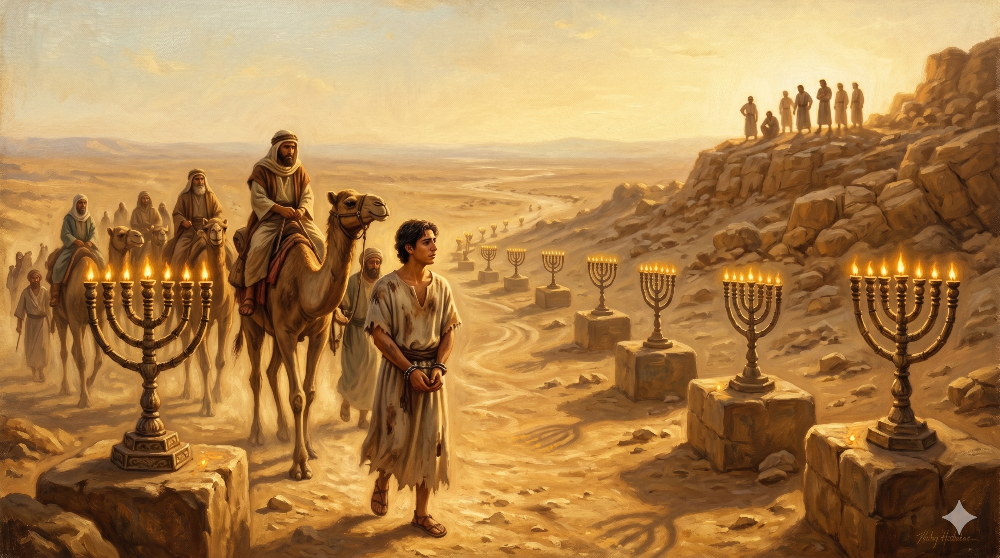

공회 앞에 당당히 서서 이스라엘 역사 전체를 꿰뚫는 설교를 시작하는 스데반 — 그의 눈빛은 두려움이 아닌 확신으로 가득하고, 오랜 세월의 하나님의 섭리가 그 말씀 속에 펼쳐진다
"대제사장이 이르되 이것이 사실이냐 하니 스데반이 이르되 여러분 부형들이여 들으소서 우리 조상 아브라함이 하란에 있기 전 메소보다미아에 있을 때에 영광의 하나님이 그에게 보여 이르시되 네 고향과 친척을 떠나 내가 네게 보일 땅으로 가라 하시니 아브라함이 갈대아 사람의 땅을 떠나 하란에 거하다가 그의 아버지가 죽으매 하나님이 그를 거기서 너희 지금 사는 이 땅으로 옮기셨느니라" — 사도행전 7:1-4
죽음의 위협 앞에서 스데반이 선택한 것은 변명이나 자기 방어가 아니었습니다. 그는 이스라엘의 역사 전체를 되짚어 내려가는 긴 설교를 시작했습니다. 이것은 단순한 역사 강의가 아닙니다. 스데반은 이스라엘 역사를 통해 하나님의 패턴을 보여줍니다. 아브라함을 부르실 때 하나님은 성전도, 예루살렘도, 정해진 땅도 없는 메소보다미아에서 시작하셨습니다. "영광의 하나님이 그에게 보여"라는 표현에서 스데반은 하나님의 임재가 특정 장소에 묶여 있지 않음을 강조합니다. 하나님은 어디서든 말씀하시고, 어디서든 일하십니다.
스데반의 설교는 요셉 이야기까지 이어집니다. 형제들에게 팔려 이집트에 간 요셉, 그 굴욕과 고난의 자리에서도 하나님이 함께하셨고, 결국 그를 통해 온 가족을 구하셨습니다. 스데반이 말하려는 핵심은 이것입니다. 하나님의 구원 계획은 예루살렘 성전이나 유대 전통에 갇혀 있지 않습니다. 하나님은 아브라함을 이방 땅에서 부르셨고, 요셉을 이방 나라에서 높이셨습니다. 예수님을 통한 구원도 그 동일한 하나님의 섭리 속에 있습니다. 스데반은 자신을 고발한 자들에게, 그들이 주장하는 전통이 실은 하나님의 더 큰 이야기를 가리고 있음을 역사로 증명하고 있었습니다.

이집트로 팔려가는 요셉 — 고난의 자리가 구원의 통로가 되는 하나님의 역설적 섭리. 스데반은 이 이야기를 통해 예수님의 길이 낯선 것이 아님을 보여준다
스데반의 설교는 우리에게 역사를 읽는 시각을 바꿔 줍니다. 아브라함의 방랑, 요셉의 고난, 이스라엘의 노예 생활 — 이 모든 것이 실패처럼 보였지만, 하나님은 그 안에서 일관되게 일하고 계셨습니다. 우리의 삶도 마찬가지입니다. 지금 당신이 겪고 있는 어려움, 기대와 다른 방향으로 흘러가는 것 같은 상황이 있습니까? 스데반처럼 더 넓은 하나님의 섭리의 눈으로 바라보십시오. 하나님은 아브라함의 방랑도, 요셉의 구덩이도 낭비하지 않으셨습니다.
또한 스데반은 죽음 앞에서도 하나님의 말씀을 담대히 전했습니다. 그 담대함은 역사 속 하나님의 신실하심을 알았기 때문입니다. 과거에 신실하셨던 하나님이 지금도 신실하시다는 확신이, 그를 두려움이 아닌 믿음으로 서게 했습니다. 성경 역사를 깊이 아는 것은 단순한 지식이 아닙니다. 그것은 오늘의 두려움을 이기는 믿음의 뿌리가 됩니다.
하나님은 아브라함의 방랑도, 요셉의 구덩이도 낭비하지 않으셨습니다.
당신의 고난도 그분의 이야기 안에 있습니다.
역사를 아는 사람은 두려움 앞에서도 말씀을 붙들 수 있습니다.